Abra o Flowlab e entre em MY GAMES


O clipe repete sozinho. Repare onde o cursor vai antes de clicar.
Foto da tela.
No navegador, vá para flowlab.io.
Se aparecer Log in no canto de cima à direita, clique nele e entre com a sua conta — sem entrar, o jogo não fica salvo.
Depois, no alto à direita, clique em My Games. Os jogos das aulas 1 e 2 estão aí na lista, guardados. Hoje a gente faz outro, do zero.
- Aparece Log in
- Clique nele e entre com o e-mail e a senha da sua conta.
- Minha lista está vazia
- Você pode estar em outra conta. Clique na bolinha do canto de cima e confira.
Crie um jogo novo


O clipe repete sozinho. Repare onde o cursor vai antes de clicar.
Foto da tela.
Clique no botão verde + New Game, no canto direito.
- Não aconteceu nada
- Clique de novo, uma vez só, bem no meio do botão verde. Às vezes ele demora alguns segundos para abrir a janelinha.
Escolha o PROJETO VAZIO

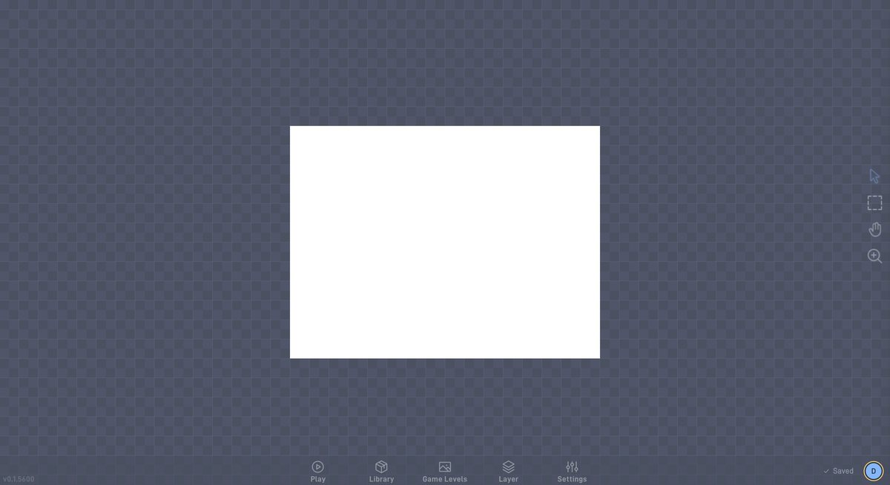
O clipe repete sozinho. Repare onde o cursor vai antes de clicar.
Foto da tela.
Clique na figura da esquerda, a do + grande.
Clique na figura, não no nome embaixo dela — o nome não responde.
- Abriu o Flowlab Tutorial
- Volte para My Games, apague esse jogo nos três pontinhos e comece de novo.
Crie o jogador
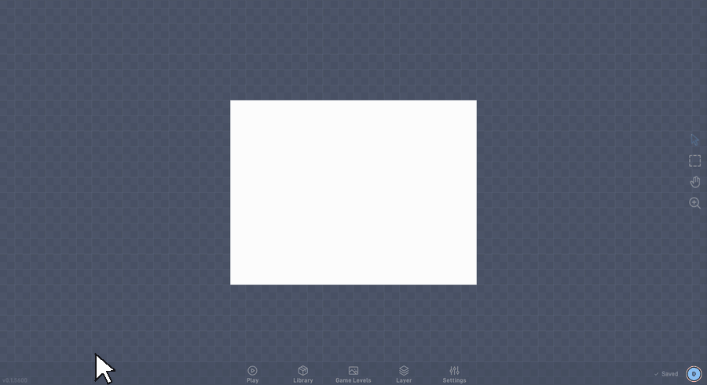
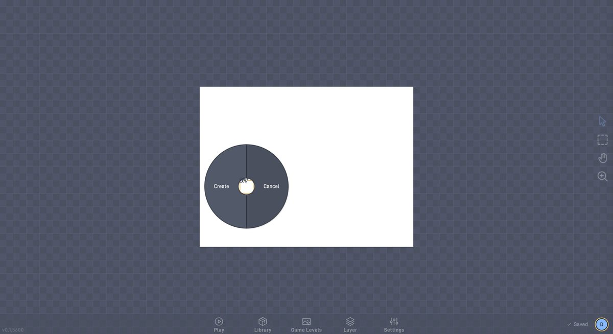
O clipe repete sozinho. Repare onde o cursor vai antes de clicar.
Foto da tela.
Clique uma vez dentro da folha branca, na parte de baixo e à esquerda — o boneco vai começar ali, e a escada vai subir para a direita.
Abre a roda com Create e Cancel.
- Apareceu Clone, Edit, Delete
- Aquela casa já tem um objeto. Clique em Cancel e escolha uma casa vazia.
Escolha CREATE
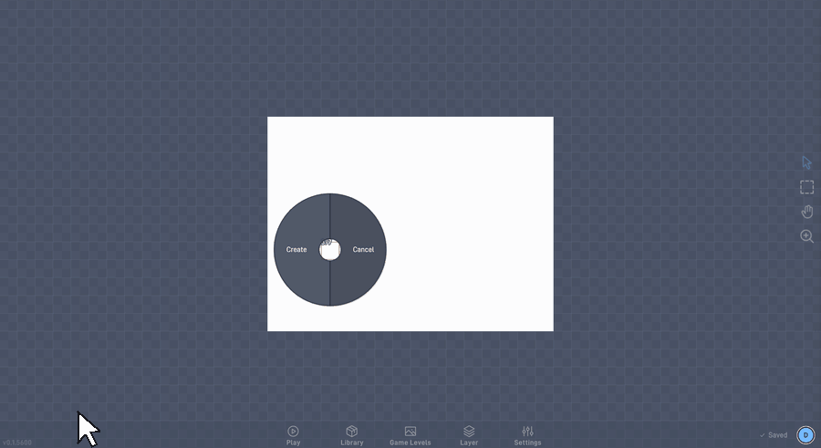
O clipe repete sozinho. Repare onde o cursor vai antes de clicar.
Foto da tela.
Na roda, clique em Create, em cima à direita.
Abre o painel do objeto novo, com edit sprite à esquerda e os campos Type e Name.
- Fechou tudo
- Você clicou em Cancel. Clique de novo na casa e escolha Create.
- A roda sumiu sozinha
- Clique de novo na mesma casa — ela ainda está vazia.
Escreva JOGADOR nos DOIS campos
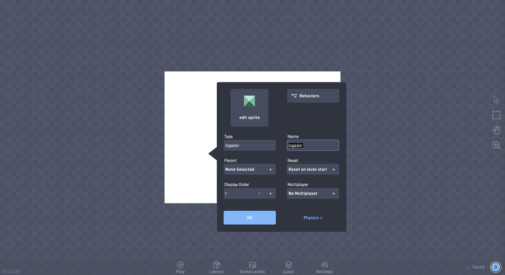
Foto da tela.
No painel há dois campos lado a lado:
1. Em Name, apague o que estiver escrito e escreva Jogador.
2. Em Type, à esquerda do Name, apague e escreva Jogador também.
Aperte Tab depois de cada um (o Enter fecha o painel).
Por que os dois: o Name é o apelido do objeto, e serve para você. O Type é o que os outros objetos enxergam — mais para a frente a lava vai precisar dizer “eu só conto quando bater no Jogador”, e o nome que ela vai procurar na lista é o do Type.
- O painel fechou quando eu apertei Enter
- Normal. Clique de novo na casa do boneco, escolha Edit e confira os dois campos.
- Só consegui mudar um
- Clique duas vezes dentro do campo que faltou, apague tudo e escreva de novo.
- Escrevi errado e já fechou
- Dá para voltar: clique na casa, escolha Edit e corrija.
Pinte o jogador de azul
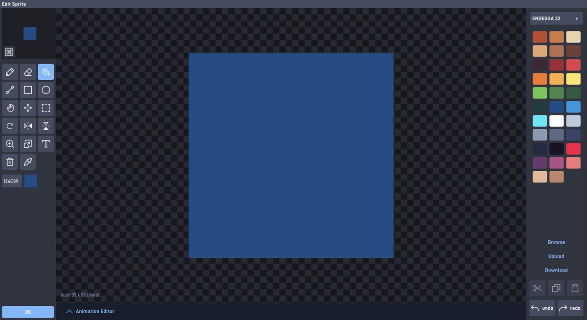
Foto da tela.
Clique em edit sprite, o quadradinho à esquerda do painel.
Abre a tela de desenho. Clique na latinha de tinta (a terceira ferramenta da fileira de cima), depois no azul da paleta à direita, e então dentro do quadrado grande do meio.
Para fechar, clique em OK, no canto de baixo à esquerda.
- Pintei e só mudou um pedacinho
- A latinha pinta a área que você clicou. Clique em outro canto do quadrado grande até ele ficar todo azul.
- Não acho a latinha
- É a terceira ferramenta da primeira fileira, com a tinta escorrendo.
Abra a física e marque MOVABLE
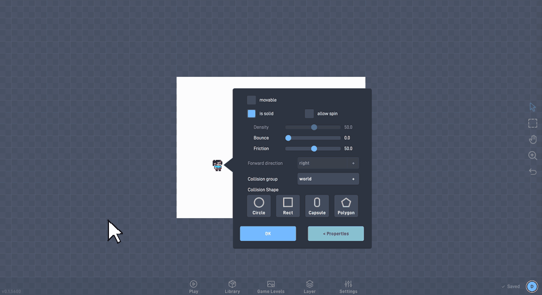
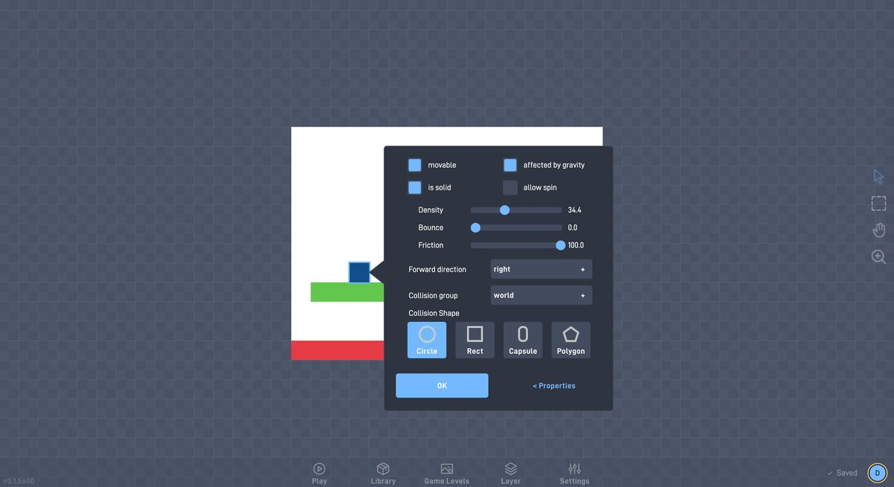
O clipe repete sozinho. Repare onde o cursor vai antes de clicar.
Foto da tela.
No painel do objeto, clique em Physics >, no canto de baixo à direita.
O painel troca e mostra as caixinhas da física. Clique na caixinha de movable — bem no quadradinho, não na palavra.
movable quer dizer pode se mexer. Sem ela, o boneco fica pregado no lugar e nenhum comando faz ele andar.
- Não acho o Physics
- Ele fica no canto de baixo à direita do painel do objeto, escrito pequeno.
- A caixinha não fica azul
- Clique bem em cima do quadradinho, não na palavra.
- Density está cinza
- Ela só liga depois que movable estiver marcado.
Dê o peso certo ao jogador
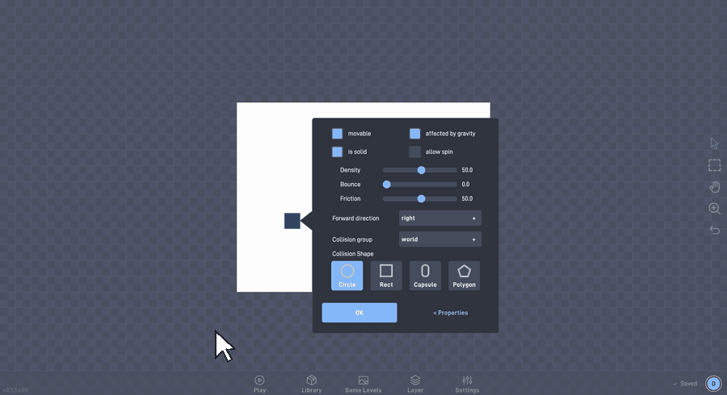
O clipe repete sozinho. Repare onde o cursor vai antes de clicar.
Foto da tela.
Ainda na física, mexa em dois controles:
1. Em Density (peso), clique na barrinha um pouco antes da metade, até o número ao lado ficar perto de 30. A barrinha marca o valor onde você clica: se passar de 30, clique um pouco mais para a esquerda; se ficar abaixo, um pouco mais para a direita.
2. Em Friction (atrito), clique na ponta direita da barrinha, para ficar 100.
O pulo do Flowlab tem força fixa. Pesado demais, ela não levanta o boneco do chão e ele simplesmente não pula. Leve demais, ele sai voando para fora da tela. Perto de 30 ele pula a altura de umas quatro casas — que é exatamente o degrau desta fase.
- O número foi para 100 e eu queria 30
- Você clicou perto da ponta direita. Clique de novo um pouco antes da metade da barrinha.
- O número foi para 3
- Você clicou na ponta esquerda. Clique um pouco mais para a direita.
- Density está cinza e não muda
- Volte ao passo 8: ele só funciona com movable marcado.
Dê movimento e pulo ao jogador
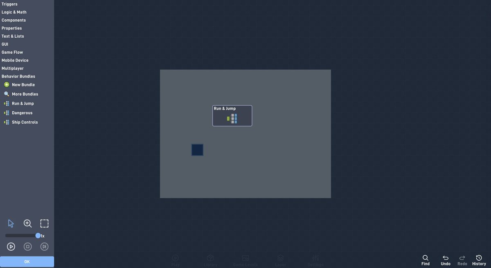
Foto da tela.
Feche a física no OK azul e, no painel do objeto, clique em Behaviors.
Abre a mesa de blocos. Na coluna da esquerda, lá embaixo, clique em Behavior Bundles e arraste Run & Jump para o meio da mesa.
Esse pacote já vem pronto: é ele que faz o boneco correr com as setas e pular.
Para sair da mesa de blocos, clique no OK azul do canto de baixo à esquerda; depois feche o painel do objeto no OK azul dele.
- Arrastei e não ficou nada
- Puxe de novo, mais devagar, e solte no meio da área escura.
- Não acho Behavior Bundles
- É a última linha da coluna da esquerda. Clique nela para abrir a lista.
- Fiquei preso na mesa de blocos
- São dois OK azuis, um depois do outro: o da mesa e o do painel do objeto.
Faça o chão
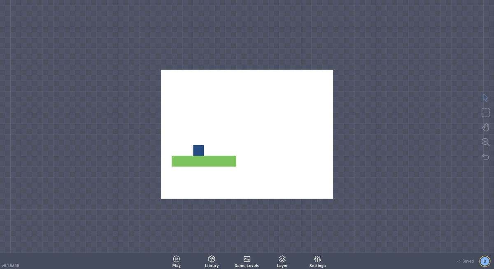
Foto da tela.
Clique numa casa vazia uma fileira abaixo do boneco e duas casas à esquerda dele, e escolha Create.
Em Name, escreva Chao. Clique em edit sprite, pinte de verde e feche no OK.
Agora repita essa peça para o lado: clique na casa dela, escolha Clone e clique nas cinco casas seguintes à direita, uma de cada vez. Para terminar, clique em done cloning.
- As peças ficaram com buraco no meio
- Clique exatamente na casa vizinha, sem pular nenhuma. Buraco no chão derruba o boneco.
- Cliquei e não colocou
- No modo clone o clique precisa ser mais devagar. Vá uma casa por vez.
- Saí do clone sem querer
- Clique na peça de novo, escolha Clone e continue de onde parou.
Faça o segundo degrau
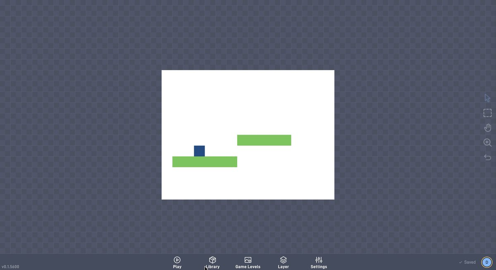
Foto da tela.
Clique numa casa vazia duas fileiras acima do chão e uma coluna à direita de onde o chão termina, e escolha Create.
Em Name, escreva Plataforma. Clique em edit sprite, pinte de verde e feche no OK.
Depois clone essa peça para as quatro casas seguintes à direita e clique em done cloning.
- O degrau ficou alto demais
- Duas fileiras acima do chão, não mais. Mais alto que isso o boneco não alcança no pulo.
- O degrau ficou colado no chão
- Deixe uma coluna de distância para a direita, senão não há vão nenhum para pular.
Faça o terceiro degrau
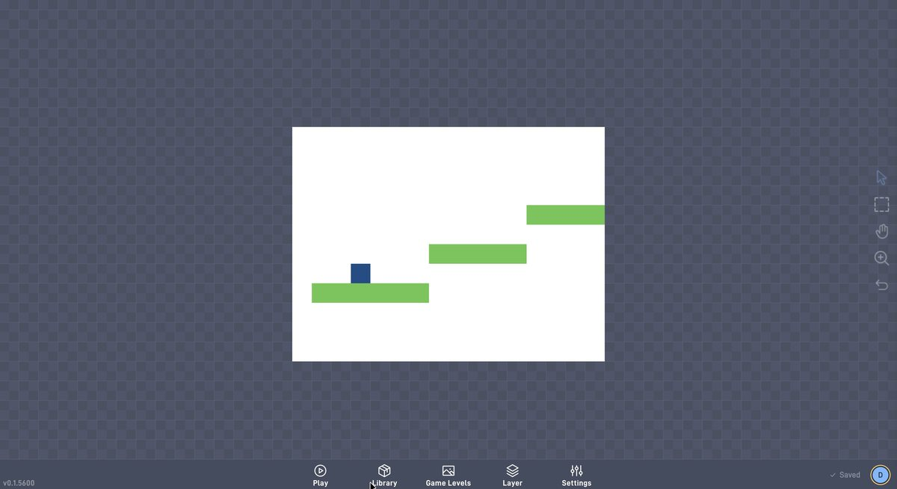
Foto da tela.
Mais uma vez: clique numa casa vazia duas fileiras acima do segundo degrau e uma coluna à direita de onde ele termina, e escolha Create.
Em Name, escreva Alta. Clique em edit sprite, pinte de verde e feche no OK.
Clone para as três casas seguintes à direita, até encostar na beirada da folha, e clique em done cloning.
- Não cabe até a beirada
- Tudo bem terminar uma casa antes. O que importa é o degrau ser largo.
- Pulei uma fileira a mais
- Clique na peça errada, escolha Delete e refaça duas fileiras acima.
Ponha a lava no pé da tela
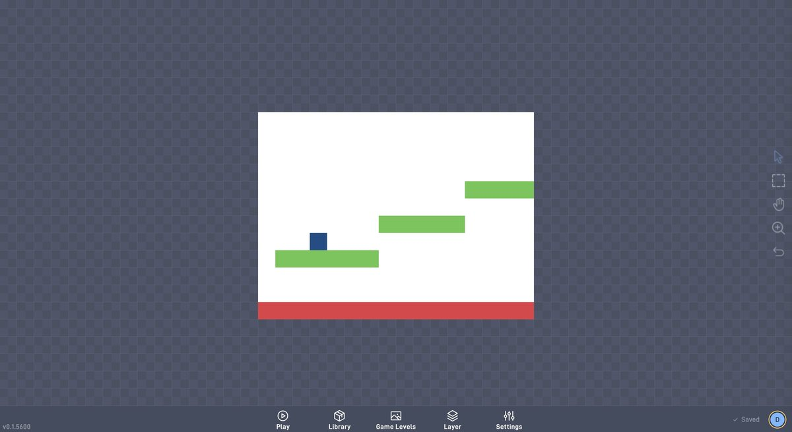
Foto da tela.
Clique na casa do canto de baixo à esquerda da folha branca e escolha Create.
Em Name, escreva Lava. Clique em edit sprite, pinte de vermelho e feche no OK.
Agora clone a lava por toda a fileira de baixo, de ponta a ponta, sem deixar buraco, e clique em done cloning.
- Sobrou um buraco na ponta
- Tape: a lava precisa cobrir tudo, senão o boneco cai pelo vão e o jogo fica travado.
- A lava ficou em cima do chão verde
- Ela vai na última fileira, a mais baixa de todas. Apague e refaça embaixo.
Ensine a lava a se mexer
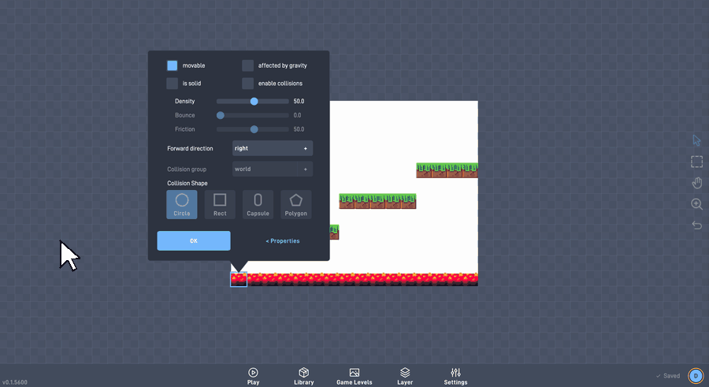
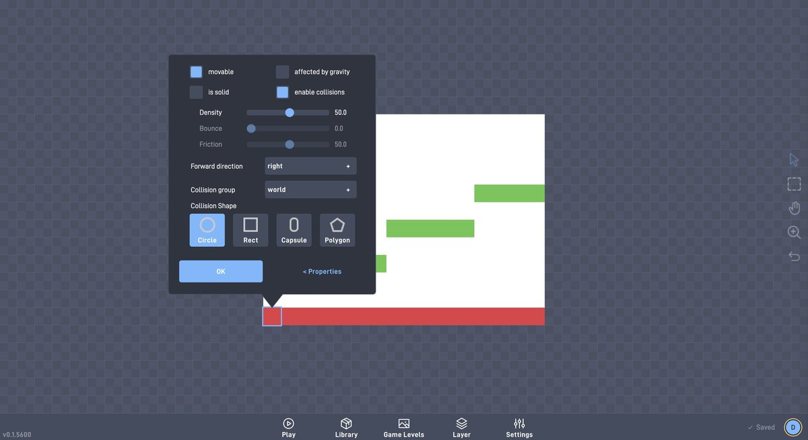
O clipe repete sozinho. Repare onde o cursor vai antes de clicar.
Foto da tela.
Clique na primeira peça da lava, escolha Edit e depois Physics >.
Mexa em quatro caixinhas, nesta ordem:
1. movable — marque. Sem isso ela fica pregada.
2. affected by gravity — desmarque. Com gravidade ela cai, e a gente quer que suba.
3. is solid — desmarque. Assim a lava atravessa os degraus em vez de ficar entalada embaixo deles.
4. enable collisions — apareceu agora no lugar do is solid. Marque. Ela devolve o toque sem devolver o empurrão.
Os dois últimos andam juntos: sem o 3 a lava sobe e trava nos degraus; sem o 4 ela sobe por cima do boneco e não acontece nada.
Feche no OK azul.
- Não existe enable collisions no meu painel
- Ela só nasce depois que is solid for desmarcado. Faça o 3 primeiro.
- Marquei na palavra e não mudou
- A caixinha é o quadradinho à esquerda da palavra. Clique nele.
- Mexi na peça errada
- Qualquer peça da lava serve: elas são todas o mesmo objeto, e o que você mudar vale para todas.
Monte os três blocos da lava
Foto da tela.
Com a lava ainda aberta, clique em Behaviors. Abre a mesa de blocos dela, vazia.
Arraste três blocos da coluna da esquerda:
1. Em Triggers, o Always — solte na parte de cima da mesa.
2. Em Logic & Math, o Number — solte no meio, mais abaixo.
3. Em Properties, o Velocity — solte à direita, na altura do Always.
Agora os fios. Arraste de bolinha a bolinha, devagar:
4. Da bolinha out do Always até a bolinha get do Number.
5. Da bolinha out do Number até a bolinha y do Velocity.
Lendo em voz alta: sempre (Always) pegue este número (Number) e use como velocidade para cima e para baixo (y).
- O fio não aparece
- Arraste devagar, de uma bolinha até a outra, e solte em cima da segunda. Rápido demais, o Flowlab só acende a bolinha.
- Liguei na bolinha errada
- Arraste o fio para fora e solte no vazio para desfazer; depois refaça.
- Não acho o Velocity
- Ele está em Properties, na coluna da esquerda — não em Components.
- Arrastei o bloco e ele não ficou
- Puxe de novo, mais devagar, e solte no meio da área escura.
Escreva o número que faz subir
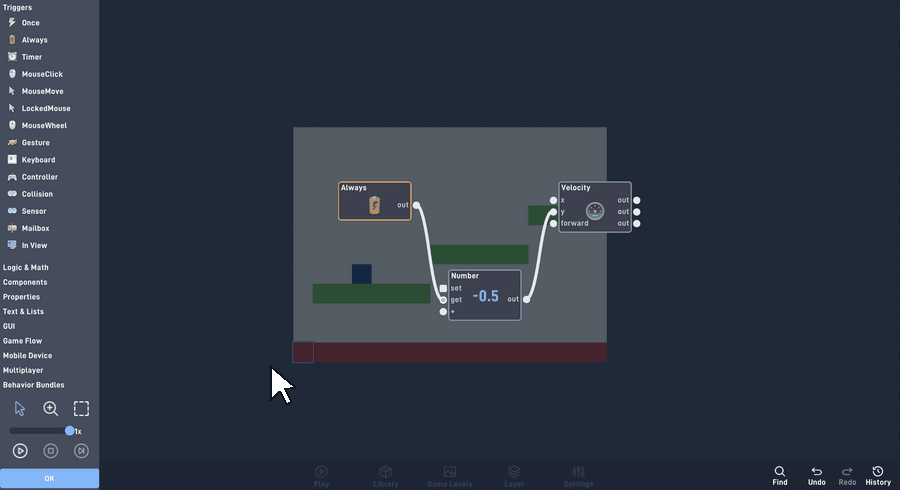
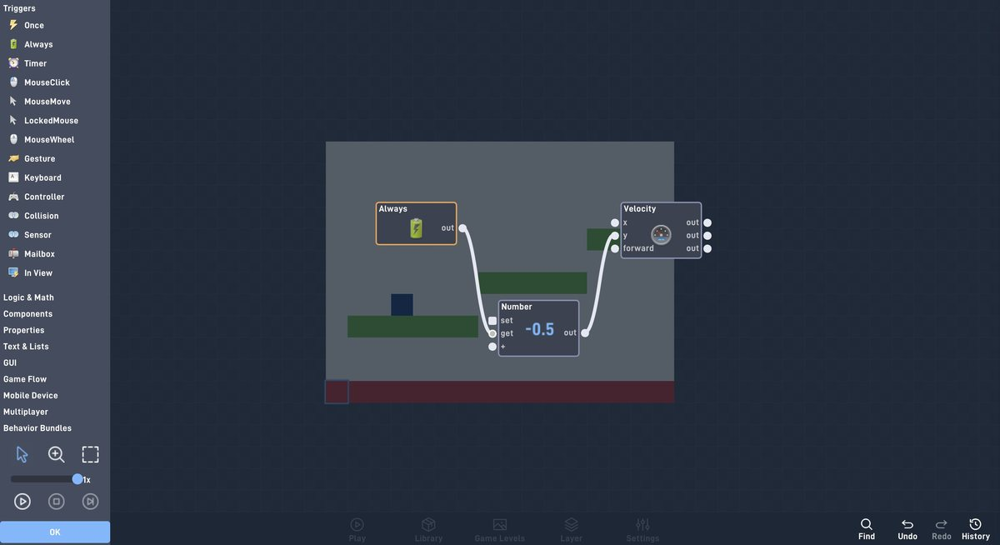
O clipe repete sozinho. Repare onde o cursor vai antes de clicar.
Foto da tela.
O Number ainda mostra 0, e com zero a lava fica parada.
Aperte e segure um instante em cima do Number — clique rápido só seleciona o bloco — e abre a janelinha de ajustes.
No campo Current value, apague o que estiver lá e escreva 0.5. Depois clique uma vez no botão −, à direita do campo: o número vira -0.5. Feche na janelinha no OK.
Por que não digitar o traço: o campo engole o sinal de menos quando ele é a primeira coisa que você digita. O botão − tira 1 do valor a cada clique — é por isso que 0.5 vira -0.5.
E por que negativo: no Flowlab, y para cima é negativo. Com -0.5 a lava sobe devagar, e você tem uns 16 segundos para subir a escada inteira.
- A janelinha de ajustes não abre
- Clique rápido só seleciona o bloco. Aperte e segure um instante antes de soltar.
- Ficou 0.5 em vez de -0.5
- Você digitou o traço e ele sumiu. Apague, escreva só 0.5 e clique uma vez no botão −.
- Ficou -0.5 mas a lava desce
- Confira o fio: ele tem de chegar no y do Velocity, não no x.
- Cliquei duas vezes no menos
- Ficou -1.5. Clique no + uma vez para voltar.
Faça a lava recomeçar o jogo
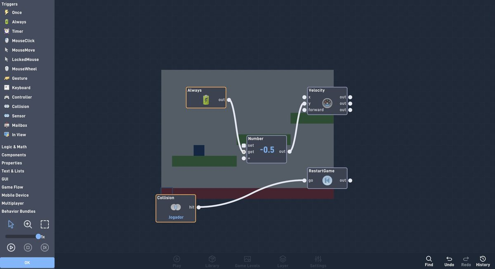
Foto da tela.
Ainda na mesa da lava, arraste mais dois blocos para a parte de baixo:
1. Em Triggers, o Collision.
2. Em Game Flow, o Restart Game.
Ligue hit do Collision até go do Restart Game.
Agora o passo que muda tudo: aperte e segure em cima do Collision para abrir a janelinha. Na lista de cima, onde está escrito Any Type, clique e escolha Jogador. Feche no OK.
Em Any Type a batida conta com qualquer coisa — e a primeira coisa que a lava encontra subindo é o chão. O jogo recomeçaria sozinho a cada poucos segundos e a fase ficaria impossível, sem nada no editor avisar.
Saia da mesa no OK azul e feche o painel do objeto.
- Jogador não aparece na lista
- Volte ao passo 6: o campo Type do boneco precisa estar escrito Jogador. É esse nome que aparece aqui.
- O jogo recomeça sozinho sem eu encostar
- A lista ficou em Any Type. Abra o Collision de novo e escolha Jogador.
- Não acho o Restart Game
- Ele está em Game Flow, na coluna da esquerda.
Ponha a estrela no alto
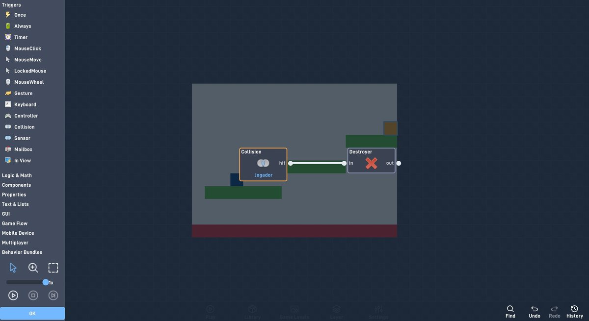
Foto da tela.
Clique na casa em cima da ponta direita do degrau mais alto e escolha Create.
Em Name, escreva Estrela. Clique em edit sprite, pinte de amarelo e feche no OK.
Clique em Behaviors e arraste dois blocos: o Collision (em Triggers) e o Destroyer (em Components). Ligue hit até in.
E de novo o tipo: aperte e segure em cima do Collision, e na lista Any Type escolha Jogador.
Sem isso, a lava encosta na estrela quando passa por ela e a destrói — o jogo se ganha sozinho antes de você chegar lá, e o que você vê é uma estrela sumindo do nada.
- A estrela some sozinha quando jogo
- A lista do Collision dela ficou em Any Type. Abra e escolha Jogador.
- A estrela caiu
- Ela não precisa de física nenhuma. Se você marcou movable nela, desmarque.
- Não acho o Destroyer
- Ele está em Components, na coluna da esquerda.
Jogue: suba antes da lava
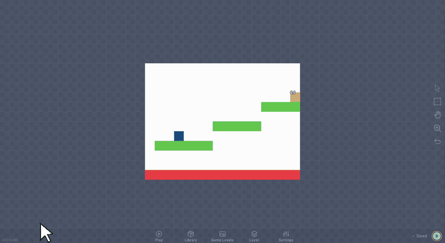
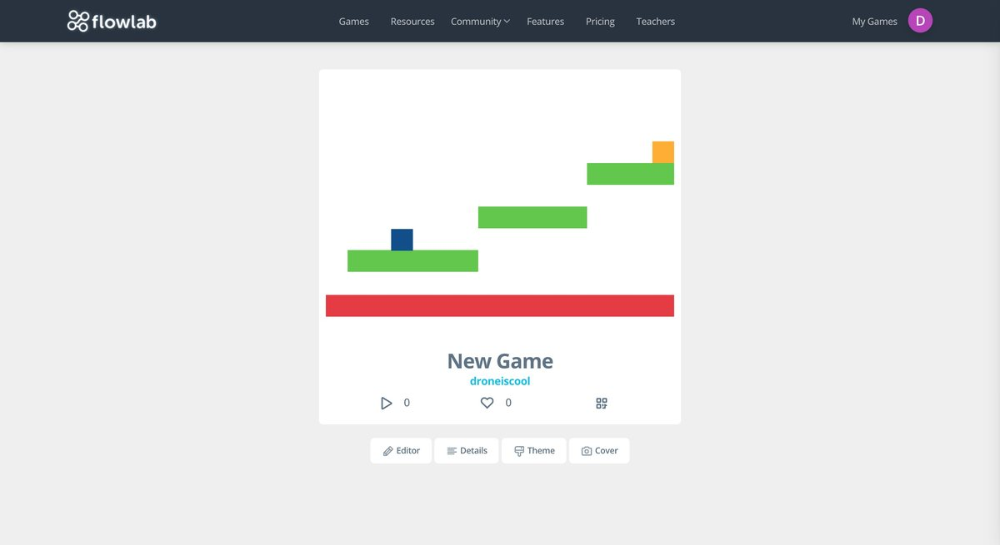
O clipe repete sozinho. Repare onde o cursor vai antes de clicar.
Foto da tela.
Clique em Play, na fileira de baixo.
O jogo abre numa página só dele. Clique uma vez dentro do jogo (para o teclado ir para lá) e jogue: seta para a direita para correr, seta para cima para pular. Segure a direita enquanto pula — parado, o boneco sobe e cai no mesmo lugar.
Suba os três degraus e ande até a estrela: ela some quando você encosta. Se a lava te alcançar antes, o jogo recomeça e você tenta de novo.
O endereço desta página é o link do seu jogo: dá para mandar para a sua família tentar.
- O boneco não anda
- Clique uma vez dentro do jogo antes de usar as setas; o teclado precisa estar 'dentro' dele.
- Ele pula parado e não atravessa o vão
- Segure a seta da direita junto com o pulo, não uma depois da outra.
- A lava não sobe
- Confira duas coisas: o -0.5 no Number (passo 17) e os dois fios (passo 16).
- A lava sobe mas não me mata
- Volte ao passo 15: falta marcar enable collisions.